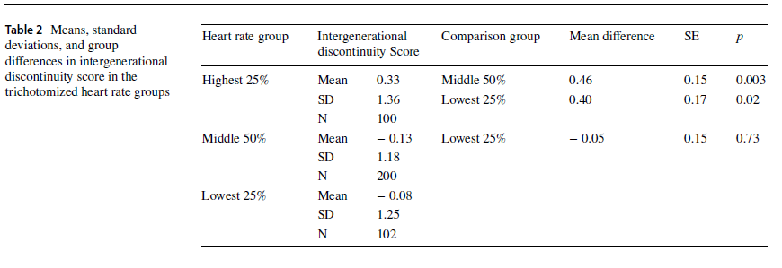
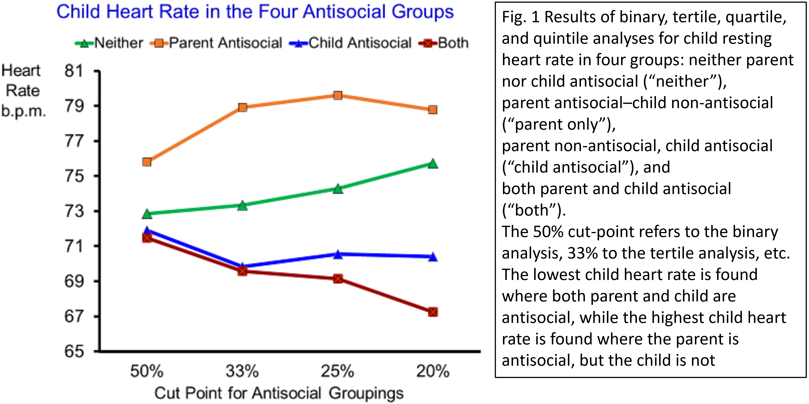

C. Miller
Undergraduate Psychology Major
Department of Psychology
CUNY Brooklyn College
A Presentation from the Psychophysiology Lab
Psychophysiology transforms unobservable psychological or mental processes into measurable physiological data (Porges, 2006).
High Resting Heart Rate Protects Against the Intergenerational Transmission of Antisocial Behavior: A Birth Cohort Study
Authors: Raine, A., Choy, O., Achenbach, T. et al. (2023)
Journal: European Child & Adolescent Psychology
Cited by the author, A Systematic Review and Meta Analysis of the Intergeneraatioal Transmission of Criminal Behavior (Styske, B. , Shaikh, A. I. , 2017) is an example of research that utilizes longitudinal study data to explore moderators of transmission of criminal and antisocial behavior from parent to child.
In this meta analysis the authors found that parental crime predicts increased risk for offspring delinquent and criminal behavior
There were no statistically significant differences according to child gender There were differences in specific parent-child gender combinations
The gender paradox: The gender paradox of developmental psychopathology: Wherein the gender or which the problem behavior is rarer compared with the gender in which the problem behavior is more common, a more severe form or presentation of the problem behavior is displayed
The gender paradox was cited as a possible explanation for differences in parent-child gender combinations and outcomes regarding criminal behavior
In this paper the authors utilize heart rate to index autonomic nervous system function as a possible moderator between behavior and intergenerational transmission of antisocial behavior. The following theoretical perspectives were included to support their logic:
Fearlessness Theory
Low heart rate during a rest period reflects a relative lack of fear to a mild stressor for a child(unfamiliar laboratory)
The authors write that higher resting heart rate reflects fearfulness and would decrease antisocial acts due to fear of punishment
Stimulation Seeking Theory
Low physiological arousal motivates individuals to seek stimulation to increase their arousal levels (Risk-taking antisocial acts elevate arousal to optimal level)
Regarding this theory, individuals with higher autonomic arousal may encourage individuals to avoid stimulating experiences.
Social Learning Theory (Styske,B. , Shaikh, A. I., 2017)
Intergenerational transmission signifies that some characteristics or behavior is seen in both parent and the child. It is also known as intergenerational continuity (Styske, B. , Shaikh, A. I. , 2017)
Intergenerational transmission of behaviors or characteristics can include:
Socioeconomic Status
Educational Attainment
Mental Health Status
Parenting Behaviors
Substance Use
Criminal Behavior
Broad Question
Specific Question
Investigating biologcial correlates for intergenerational discontinuity of antisocial behavior
Hypotheses:
High heart rate may act as a protective factor in children. The high parent antisocial/low child antisocial group would have higher heart rates than the other three groups
The study location:
Island Mauritius
Participants were recruited from a database of a birth cohort study of child health and development The participants consisted of 405 parent-child dyads, N=810 Children born between 1969-1970 in two towns on the island were recruited. Children were recruited at 3 years of age from September 1972 to August 1973 The towns Vacoas and Quatre, Bornes were chosen to represent the ethnic distribution of the island
The study took place from March 2018 to April 2019
Children (55.3% female) had a mean age of 15.3 years (range 11.0–19.9 years, SD = 2.2), with 78.5% Indian and 21.5% Creole. Parents (75.8% female) had a mean age of 45.9 years (range 29.0–61.1 years, SD = 4.53), with 79.3% Indian and 20.7% Creole.
Child self-reported antisocial behavior was assessed using six scales. Aggressive behavior, rule-breaking behavior, and attention problems were assessed using the Youth Self- Report
The fourth scale was the 10-item version of the Inventory of Callous-Unemotional Traits ICU
The final two scales were the Reactive and Proactive Aggression scales of the Reactive and Proactive Aggression Questionnaire
Parents provided self-reports of aggressive behavior, rulebreaking behavior, intrusive behavior, and attention problems on the Adult Self-Report (ASR)
Parents also provided self-reports of reactive and proactive aggression on the RPQ
Measure of intergenerational discontinuity
Subtracting z-transformed parent antisocial measure from child antisocial measure
High scores indicated non-antisocial children whose parents were antisocial
Four permutations of parent-child antisocial groups were created
Trichotomization based on heart rate


There was a significant positive correlation between the child’s resting heart rate and the intergenerational discontinuity score, r = 0.16, d = 0.32, p < 0.001.
For the initial median split analyses (50% cut-point), there was a significant effect of group on child resting heart rate, F(3,392) = 2.98, p = 0.031, partial eta2 = 0.022.
The parent antisocial/child non-antisocial group had significantly higher resting heart rates than every other group, who did not differ significantly from one another
There was a main effect of heart rate grouping on intergenerational discontinuity, F(2,393) = 5.03, p = 0.007, partial eta2 = 0.025.
Three kinds of evidence that high resting heart rate may protect against the intergenerational transmission of antisocial behavior.
First, heart rate was positively associated with an intergenerational discontinuity score, with high heart rate associated with low child antisocial scores despite high parental antisocial scores. Second, a group of children with low levels of antisocial behavior but whose parents were high in antisocial behavior had higher resting heart rates
Second, a group of children with low levels of antisocial behavior but whose parents were high in antisocial behavior had higher resting heart rates than all three other groups of children.
Third, a tertile split on resting heart rate indicated that high heart rate was a protective factor against the intergenerational transmission of antisocial behavior, rather than low heart rate representing a risk factor for intergenerational transmission.
To our knowledge, these are the first findings to identify a biological variable as a protective factor against the intergenerational transmission of antisocial behavior in children.
Generalizability of sample to larger population, due to location accessibility.
Physiological measures differed in method of collection and location, as it did not take place in psychophysiology lab. Physical fitness, prior food intake, and medication use was not assessed.
This study focused on heart rate as a possible biological protective factor. However investigation of associations of vagal tone with antisocial behavior measured as indices of Parasympathetic Nervous system have been conducted extensively. Studying physiological index of the PNS as a biological protective factor regarding transmission of antisocial behavior has yet to be studied, and would be a topic of future research.
GISGeography. (2017, November 29). Map of Africa. GIS Geography. https://gisgeography.com/africa-map/
Morris, Laurel S., McCall, Jordan, G. , et. al. (2020). The Role of the Locus Coeruleus in the Generation of Pathological Anxiety. Brain and Neuroscience Advances 4 https://doi.org/10.1177/2398212820930321.
Perry, K. J., Ostrov, J. M., et. al. (2023). The Role of Autonomic System Coordination in Relations Between Peer Factors and Aggressive Behavior in Early Childhood. Research on Child and Adolescent Psychopathology, 51(5), 693–708. https://doi.org/10.1007/s10802-022-01013-0
Porges, S. W. (2006). The Polyvagal Perspecitve. Biological Psychology. doi:10.1016/j.biopsycho.2006.06.009
Porges, S. W. (2022) Polyvagal Theory: A Science of Safety. Front. Integr. Neurosci. 16:871227. doi; 10.3389/fnint.2022.871227
Raine, A., Choy, O., Achenbach, T. et al. (2023) High resting heart rate protects against the intergenerational transmission of antisocial behavior: a birth cohort study. Eur Child Adolesc Psychiatry. https://doi-org.brooklyn.ezproxy.cuny.edu/10.1007/s00787-023-02247-z
Styske, B. , Shaikh, A. I. (2017) A systematic review and meta analysis of the intergeneratioal transmission of criminal behavior
Social Adversity
In a demographic interview with the parent, the following 16 indicators of social adversity were collected: parental teenage pregnancy (2.0%), single parent family (14.8%), four or more siblings (9.1%), father unemployed (3.2%), parent with physical or mental health problems (2.7%), parent smoked 5 or more cigarettes per day (17.3%), parent drinks more than 14 units of alcohol per week (5.2%), parent arrested (5.9%), living in government housing (2.0%), low parental education (19.5%), low occupation level (18.8%), low family income (24.7%), poor home living conditions (19.8%), problems with neighborhood crime (8.6%), problems with neighborhood conditions (19.0%), and child illness (3.0%).
Variables were scored on the basis of being present (1) or absent (0), with scores summed to provide a total adversity score.